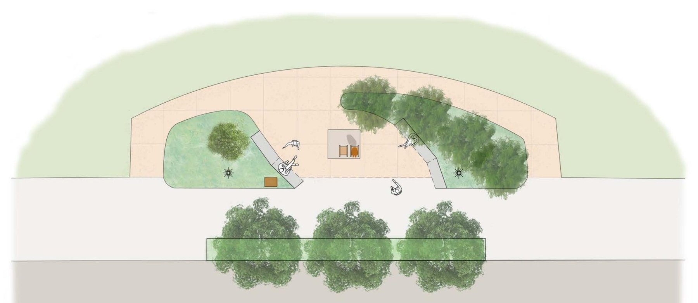
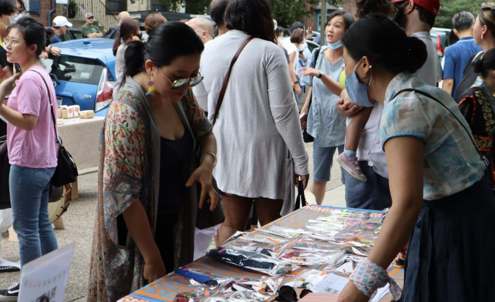
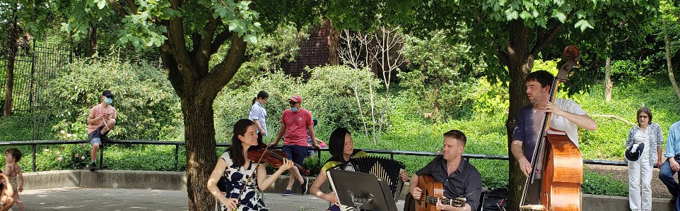

Catalog of the plaza — 805 S. Front St., Queen Village
A place to remember, reflect, and gather.
The Philadelphia Peace Plaza is home to the Statue of Peace and a public garden in Queen Village.
- Hours
- Open daily
- Admission
- Always free
- Location
- 805 S. Front Street
Queen Village, Philadelphia - Links
- Plan your visit Directions

Index
- PPP-001Statue of PeaceMemorialBronze; granite baseBase 5.9′ × 5.2′ × 7.9″2011
- PPP-002The seated girlMemorialBronze; small bird on her shoulderH 4.03′2011
- PPP-003The empty chairMemorialBronzeH 2.62′2011
- PPP-004InscriptionMemorialEtched metal signage——
- PPP-005Statue padGardenExposed aggregate paving5′-9″ × 5′-2″2019
- PPP-006The plazaGardenDesign: TEND landscape architectsW 77′-5″2019
- PPP-007BenchesGardenModular concrete and wood—2019
- PPP-008LightingGardenUnder-rail and under-bench lights; light polesPoles 12′2019
- PPP-009Native plantingGardenWitch hazel, sweetbay magnolia, native grasses—2019
- PPP-010Street treesGardenBlack gum; red in the fall—2019
- PPP-011Public testimony of Kim HaksoonHistorySurvivors begin to come forward—1991
- PPP-012The statue is createdHistoryInstalled in Seoul, South Korea—2011
- PPP-013Site selectedHistoryPublic art donation process; outreach begins—2017
- PPP-014TEND joins to designHistoryLandscape architecture—2019
- PPP-015Conceptual approvalHistoryPhiladelphia Art Commission, unanimous—2021
- PPP-016Town Hall and second reviewHistoryCity-hosted Town Hall; Art Commission—2022
- PPP-017Opening ActProgramsMonthly concert series, mostly unamplifiedMay–October—
- PPP-018AhnNyeong! Korea in Queen VillageProgramsKorean dance, music, and gamesEvery June—
- PPP-019The World After You SpokeProgramsPoetry video; Michelle Meyer, Yolanda Wisher——
No entries in this category.
About
Honoring the victims of sexual slavery during World War II, and welcoming everyone who seeks peace.
Read the history-
01
Remember
Give voice to the victims of sexual violence and support peacemaking across communities.
-
02
Reflect
A contemplative space for the forgotten faces of armed conflict, inviting visitors to help end inequality, violence, and enslavement.
-
03
Come together
Communities seeing each other beyond national and cultural identities, and building lasting peace through open dialogue.
The Statue of Peace

Created in 2011 by Seokyung Kim and Eunsung Kim. The sculpture is now in 17 places around the world, including 6 in the United States.
An empty chair beside her
A bronze girl sits with her fists resting on her knees. A small bird sits on her shoulder, and the chair beside her is empty. Visitors are invited to sit with her.
- Sculptors
- Seokyung Kim & Eunsung Kim
- Date
- 2011
- Material
- Bronze, on a granite base
- Base
- 5.9′ × 5.2′ × 7.9″
- Figure
- Height 4.03′
- Chair
- Height 2.62′
- Editions
- 17 worldwide, 6 in the United States
This statue commemorates hundreds of thousands of girls and women from Asia, Oceania, and Europe who fell victim to the systemic sexual slavery by the Japanese Imperial Army from 1931 to 1945. Starting in 1991, the survivors broke the cycle of shame and silence by testifying and urged the world to protect the future generations of women by facing the past and to build lasting peace.
History
Breaking decades of silence
During World War II, girls and women across Asia, Oceania, and Europe were coerced into sexual slavery by the Imperial Japanese Army. For decades their stories went untold.
- girls and women
- 200,000+
- countries affected
- 21
- Statues of Peace worldwide
- 17
-
PPP-011
1991
Survivor Kim Haksoon gives her public testimony. Survivors around the world begin to come forward.
-
PPP-012
2011
The Statue of Peace is created and installed in Seoul, South Korea.
-
PPP-013
2017
The Committee enters Philadelphia’s public art donation process, selects 805 S. Front Street, and begins outreach in Queen Village.
-
PPP-014
2019
TEND landscape architects joins to design the plaza.

-
PPP-015
2021
The Philadelphia Art Commission gives the project unanimous conceptual approval. The Committee becomes an independent organization.
-
PPP-016
2022
The Committee presents at a City-hosted Town Hall and returns to the Art Commission for a second review.

The plaza
A garden for quiet, shade, and gathering
Designed by TEND landscape architects with neighbors in Queen Village, who already call the site “the Sanctuary.”


Renderings and plan: TEND landscape architects, 2019
-
a
Native planting
Witch hazel, sweetbay magnolia, black gum, and native grasses bring color and shade in every season.
-
b
Places to sit
Concrete and wood benches curve around the statue, with low lighting for evening visits.
-
c
Room to gather
More green space and shade than the site has today, with room for small concerts and events.
- Design
- TEND landscape architects, 2019
- Width
- 77′-5″
- Statue pad
- 5′-9″ × 5′-2″
- Paving
- Exposed aggregate
- Seating
- Modular concrete and wood benches
- Signage
- Etched metal
- Lighting
- Under-rail and under-bench; light poles 12′
Programs
Free arts and culture at the Plaza
-
PPP-017
 May to October
May to OctoberOpening Act
A small, mostly unamplified monthly concert series with music from France, Korea, Latin America, and the Philippines.
-
PPP-018
 Every June
Every JuneAhnNyeong! Korea in Queen Village
Korean dance, music, and games for all ages during Immigrant Heritage Month.
-
PPP-019
 Poetry
PoetryThe World After You Spoke
A poetry video by Philadelphia poets Michelle Meyer and Yolanda Wisher, marking 30 years since Kim Haksoon’s testimony.

“I loved the music outside my house.”
Since 2018 we have held on-site hours, knocked on doors, joined block cleanups, and met with the Queen Village Neighbors Association and Asian community groups across the city.
Get involved
-
G-01
Donate
Gifts fund free programs and long-term care of the statue and garden. The Queen Village Neighbors Association is our fiscal sponsor.
Make a gift -
G-02
Volunteer
Help with garden days, events, and on-site welcome hours.
Join us -
G-03
Partner
Community and cultural groups can host performances, conversations, or resource tables at the Plaza.
Get in touch